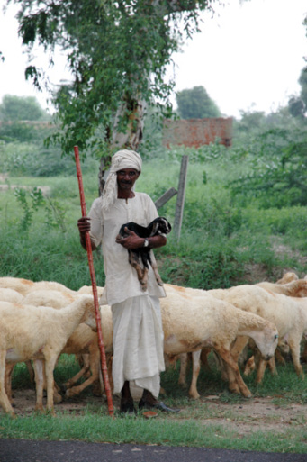
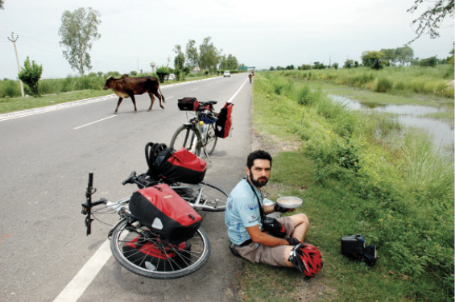

NEPAL, 27 Ağustos
Hindistan’a dönüyoruz. Yine turist otobüsündeyiz. Yine Nepal’e çıkarken olduğu gibi inerken de İtalyan arkadaşlar bulduk. Bu İtalyan Türk benzerliği efsane değil. Gerçekten iyi anlaşıyoruz onlarla. Laf aramızda, çıkarken aynı otobüste olduğumuz kıl bir Fransızı bile çekiştirdik.
Fakat yanımızdaki İtalyan çift artık dokunsan ağlayacak durumda. Saatlerdir buradayız.

Hindistan, Mathura
Muson yağmuru sonrası yavrusu gibi sarıldığı kuzuyu sakinleştiren çoban.

Hindistan, Delhi - Agra yolu
Süt ve mısır gevreği yerken, sütün sahibi arkamızdan geliyor? İlahi tasadüf!
Trenlerine yetişme şansları gitgide azalıyor. Bu karmaşada not tutmaktan başka yapacak bir şey yok. Az önce sözde isyancıların olduğu yere gittik. Anladığımız şu; buradan geçen kamyonlardan birisi bir çocuğa çarpmış. Önce öldü diye anlattılar ama şükür ki kurtulmuş. Eee yol niye kapalı peki. Çocuk hastanedeymiş. Ailesi hastane parasını ödemeyeceği için eylem yapmaya başlamış. Köylüler de onlara katılmış, yolu kapatmışlar. Herhalde yüzlerce araba, binlerce insan saatlerdir burada. Bize bahsetmediler ama yolun güzergâhını da değiştirmek istiyor olmalılar.
Barış ülkesinde yol kesme eylemi. Ne kadar tezat geliyor kulağa. Eylemcilerin çoğu çocuk yaşta. Onlar için bir çeşit eğlence, bizim için ülkemize dönememe korkusuna ve ıstıraba dönüşüyor. Birkaç polis geldi sanıyorum. En azından üniformalı birileri geldi. Ama kimse takmadı. Arabalar santim ilerlemedi henüz. Bekleyenlerin çoğu turist. Bu durum Nepal’e kesinlikle yakışmıyor. Yok yahu yakışıyor aslında.

Nepal
“Doğu, oturup beklemenin yeridir.” A. Hamdi Tanpınar.
Beklemenin ne olduğunu bilen bir ülkeden gelen bizler bile sinir içindeyiz. İnci fotoğraf çektikten sonra şarjı bitirme pahasına müzik dinliyor telefonundan. Ben biraz yazıyorum biraz eski notları okuyorum. Biraz dışarı çıkıp ne olup bittiğine bakıyorum. Yapacak bir şey yok, geri dönüyorum.
İtalyan çift için umutlar tükeniyor.
Burada zaman planlarını, bir zincirin halkaları gibi birbirine eklememek lazım. Çünkü bu zincirde birçok zayıf halka olduğu açık.